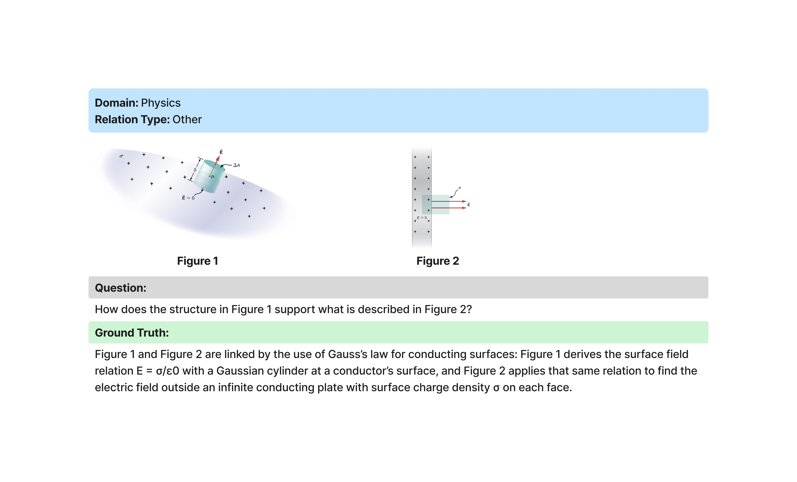
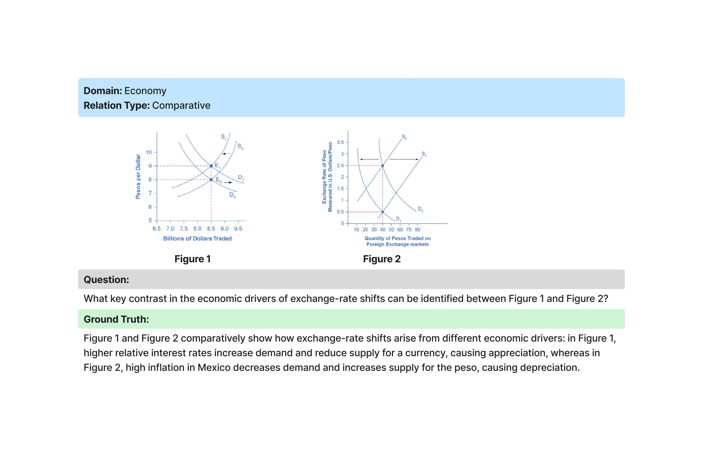
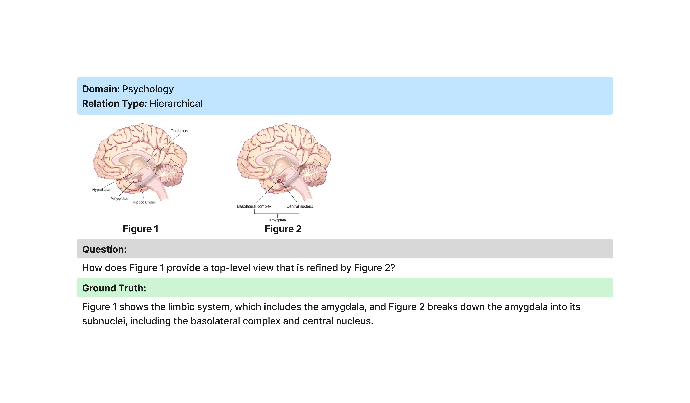
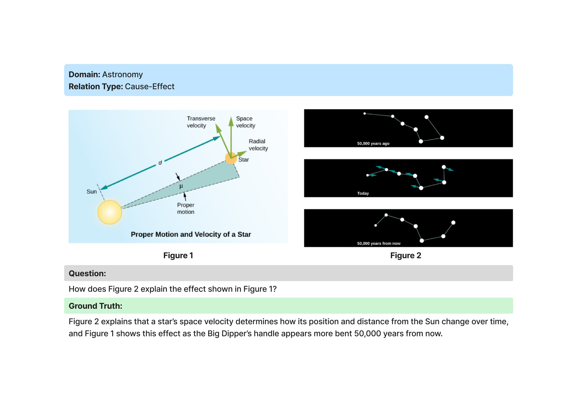
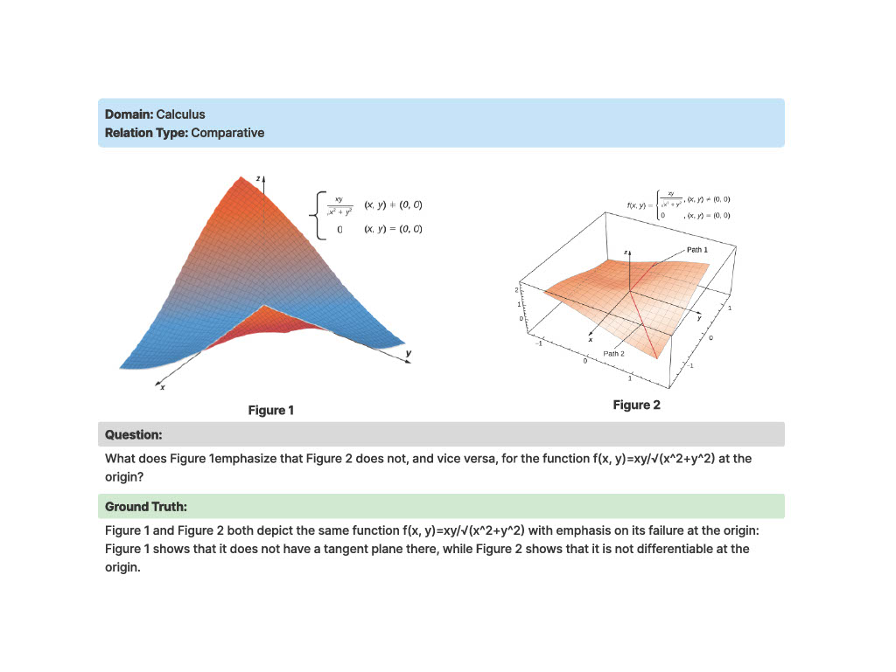
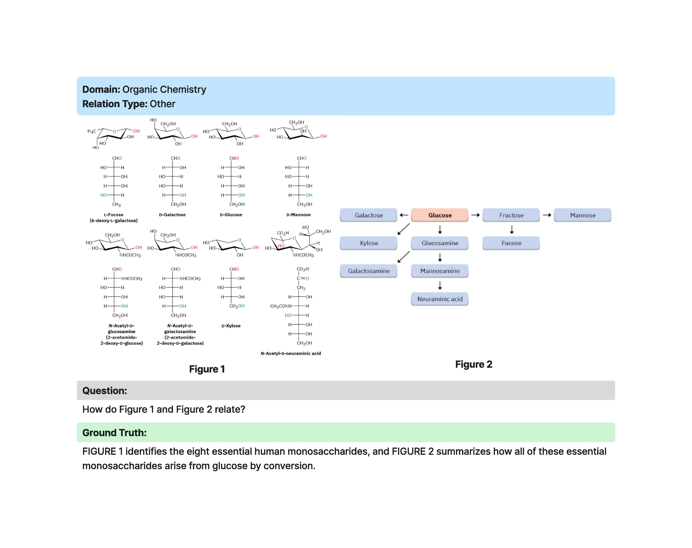
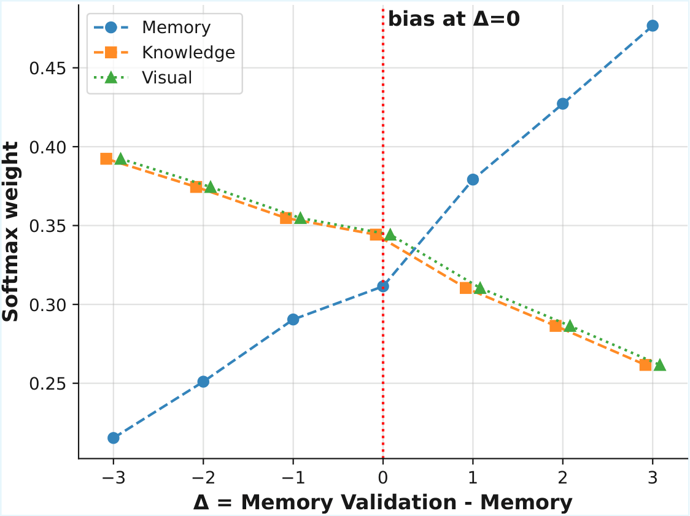
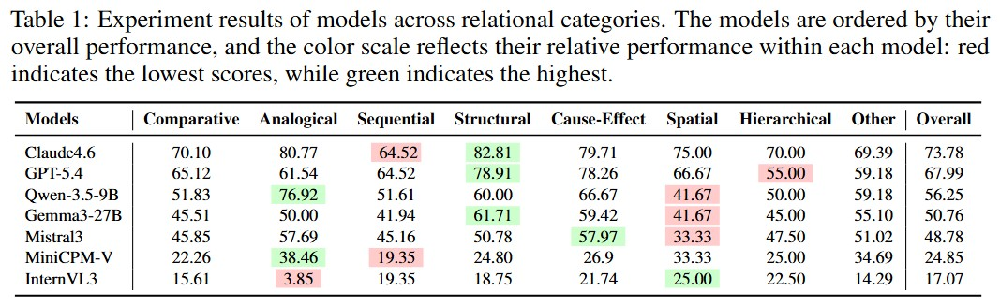
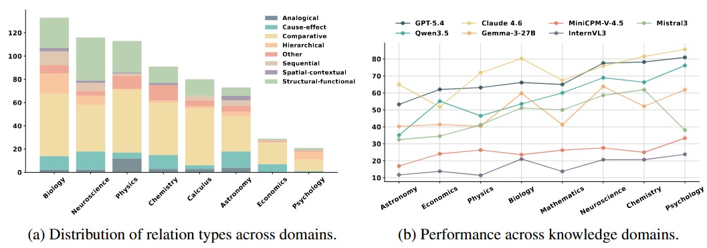
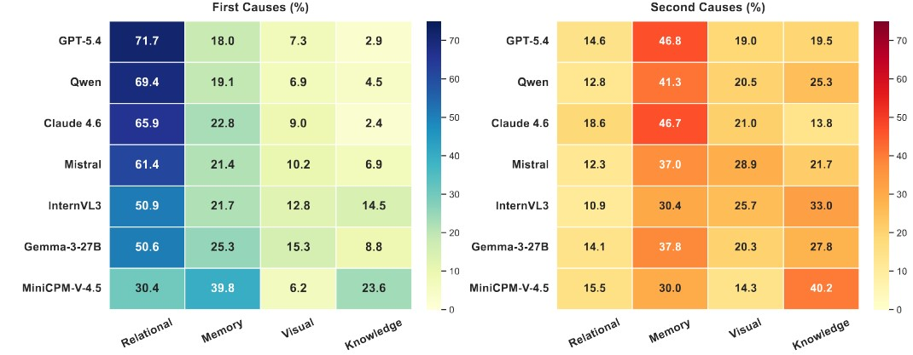

SciReC: Diagnostic Evaluation of Multimodal Multi-Turn Relational Reasoning with Adaptive Interaction
Abstract
Relational reasoning requires the process of perceptual understanding, comparing, and integrating the underlying relationships between concepts. This ability consists of multiple categories, such as analogical, structural, and cause-effect, each capturing a different aspect of higher-order understanding. To examine the performance of multimodal large language models (MLLM) on these relational inference tasks, we developed SciReC, a model-adaptive multimodal academic dialog benchmark. As the relational reasoning process involves multiple representations and various factors (visual understanding, exhibiting knowledge, and memory recall), we propose DMRA, a deficit-based diagnostic framework that quantifies the contribution of these components to identify the primary cause of unsuccessful cases. Claude 4.6 achieved the best performance on the overall relational score with 73%, followed by GPT 5.4 with 68%. Performance trends indicate that open-source models achieve their lowest scores on spatial relations, while proprietary models struggle more with hierarchical and sequential relations. Across domains, model performance is lowest on Astronomy and highest on Psychology. The results of DMRA reveal that relational reasoning is the primary source of error across all models, followed by memory limitations.
Example Relational Questions






DMRA (Deficit-Based Multimodal Relational Analysis)
DMRA diagnoses why MLLMs fail on relational reasoning tasks by separating upstream deficits (memory, knowledge, and visual understanding) from cross-image relational reasoning errors.
For each figure, deficits are measured as Dx(i) = max(0, T − Xi), where T is a performance threshold and Xi denotes memory, knowledge, or visual scores. Memory-validation questions dynamically adjust task importance through softmax-based weighting, enabling DMRA to distinguish true memory failures from perception and knowledge limitations.
The weighted upstream contribution is computed as Rx(i) = αiwx(i)Dx(i), while the remaining unexplained error is attributed to relational reasoning: Crel = F − min(F, U). This decomposition provides a fine-grained explanation of whether failures originate from perception, knowledge, memory, or the inability to connect concepts across multiple figures.

Results

Claude 4.6 leads SciReC with 73.78% accuracy, followed by GPT-5.4 (68%) and Qwen-3.5 (56.25%). While open-source models are closing the performance gap, spatial reasoning remains their major challenge. Proprietary models excel in structural reasoning but continue to struggle with hierarchical and sequential relational understanding.

SciReC evaluates relational reasoning across eight academic domains and reveals substantial domain-specific variation in MLLM performance. Astronomy emerges as the most challenging domain, while Psychology is the easiest for most models. Claude 4.6 achieves the strongest overall cross-domain performance, leading in six of eight domains, whereas GPT-5.4 performs best in Economics and Behavioral Neuroscience. Open-source models show increasing competitiveness in some domains, particularly Qwen3-5, but continue to lag behind proprietary systems in scientific domains such as Astronomy, Physics, and Chemistry.
